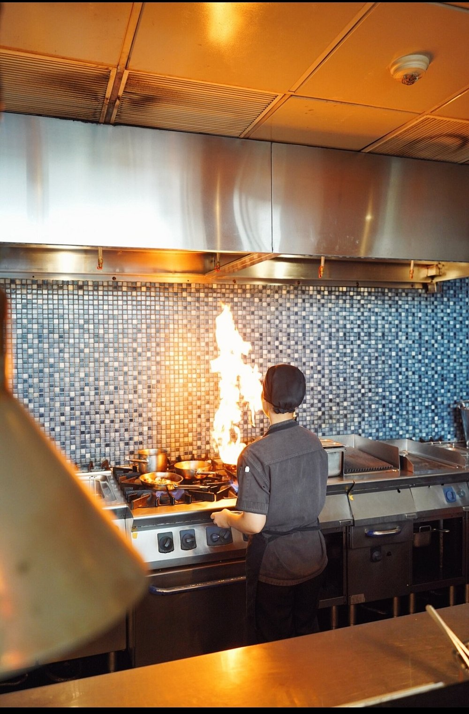
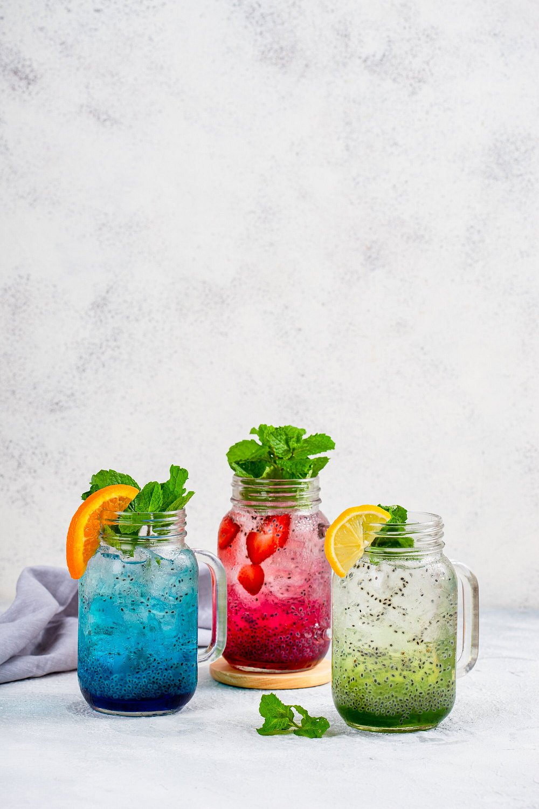
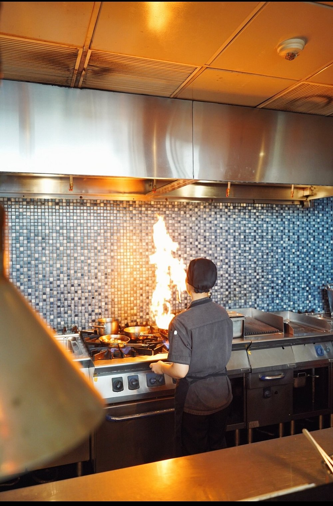
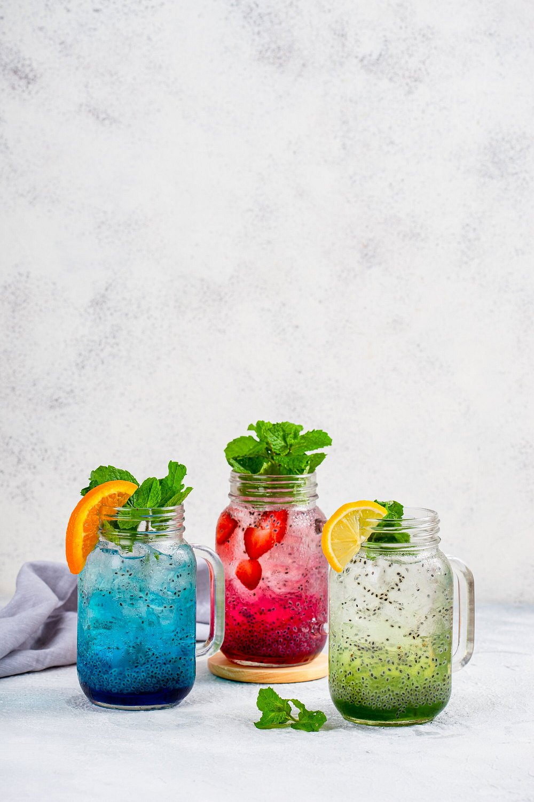

fresco
cafe & restaurant
Gallery

 





Take a look at our beautiful restaurant and dishes.
About Us

Located in the heart of Legian, Fresco Bandung is serving up the freshest seasonal fare with a focus on locally-sourced produce and markets. Our head chef sources only the freshest ingredients that have been grown in Bandung using well-established organic methods for an array of healthy and delectable fresh dishes. We're open daily for breakfast, lunch, dinner from 8am to 10:00pm and reservations are recommended as we do get busy.
Contact Us
Send Message
Contanct Info
Location
Open
Get In Touch
Jl. H.O.S. Tjokroaminoto no. 41-43, Hilton Bandung, 6th Floor 40172 Bandung
08.00am - 10.00pm